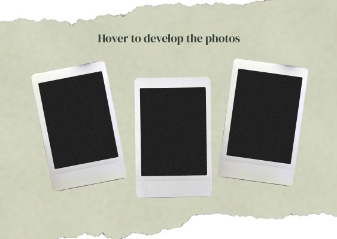
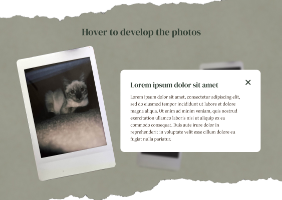
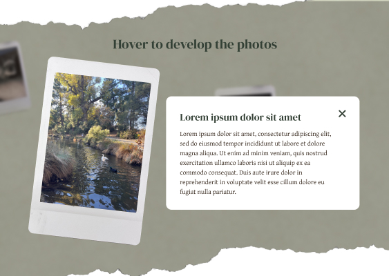

Design Revisions
Initial View
Pop-up After Hovering A Photo
Movement to Next Photo
I changed the design to have more of a scrapbook-like aesthetic to match the vintage feeling of the polaroids. I want to bring a sense of nostalgia into this project so I tried to replicate aging and wear through the textures in the background. I also rearranged the layout for the pictures and thought about how they would dynamically move depending on mouse interaction. I used a serif font, greens, and off white to further enhance the vintage feeling. To add more visual interest and to make the design more personal, I think adding some stickers or doodles in the background could help improve the design.
Concept Revisions
To enhance the concept behind this project, I discussed with my peers to understand where I could improve. One peer recommended I add a personal touch by telling my perspective of how I view a certain place, in this case, Davis, since one of my photos was from the arboretum. She suggested I write about a memory of that area, a story, or the significance of that place. I think these are great ideas to deepen the meaning behind this project but I don't think I want to limit myself to just scenes in Davis. For now, I think I'm going to tap further into the feeling of nostalgia and how I can amplifiy that feeling.